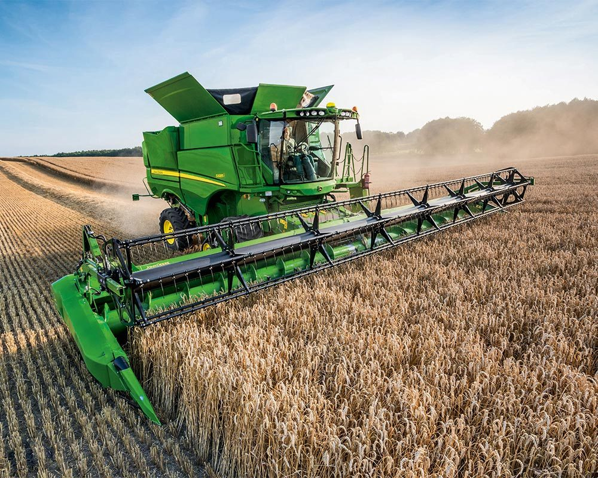

Introduction to Machine Technology

Innovative machine technology is revolutionizing modern farming, providing tools that enhance productivity, reduce manual labor, and improve crop management. These technologies are designed to maximize efficiency and sustainability in agriculture, making farming smarter and more effective.
Advantages of Machine Technology

- Increased Productivity: Machines automate repetitive tasks, allowing for faster and more accurate operations.
- Resource Efficiency: Advanced machinery reduces the waste of resources like water, seeds, and fertilizers.
- Cost Reduction: Automation cuts down on labor costs and minimizes the need for manual work.
- Precision Agriculture: Machines equipped with GPS and sensors allow for precise planting, fertilizing, and harvesting.
Applications of Machine Technology

- Automated Tractors: These machines plow, seed, and harvest with minimal human intervention.
- Spraying Drones: Drones apply pesticides and fertilizers accurately, reducing waste and environmental impact.
- Harvesting Robots: Robots are used to pick fruits and vegetables with precision, reducing damage and waste.
- Irrigation Systems: Smart irrigation systems optimize water usage based on real-time soil data.
Case Study: Automated Irrigation

Background
A farm in Australia implemented an automated irrigation system in 2022, aiming to optimize water usage and improve crop yields.
Implementation
The system used soil moisture sensors and weather data to adjust irrigation schedules, ensuring crops received the right amount of water.
Results
- Water Savings: The farm reduced water usage by 40%, leading to significant cost savings.
- Higher Yields: Optimized irrigation resulted in a 20% increase in crop yields.
- Sustainability: The system minimized water waste and supported sustainable farming practices.
Future of Machine Technology

- AI Integration: Future machines will be integrated with AI for smarter decision-making and automation.
- Autonomous Farming: Farms will increasingly rely on fully autonomous machines for various agricultural tasks.
- Environmentally Friendly: Machines will be designed to minimize environmental impact, promoting sustainable farming.
- Advanced Robotics: Robotics will continue to evolve, offering more efficient and versatile agricultural tools.